Multi-Channel Communication
Private group chats · Word of mouth · Remind · Email chains
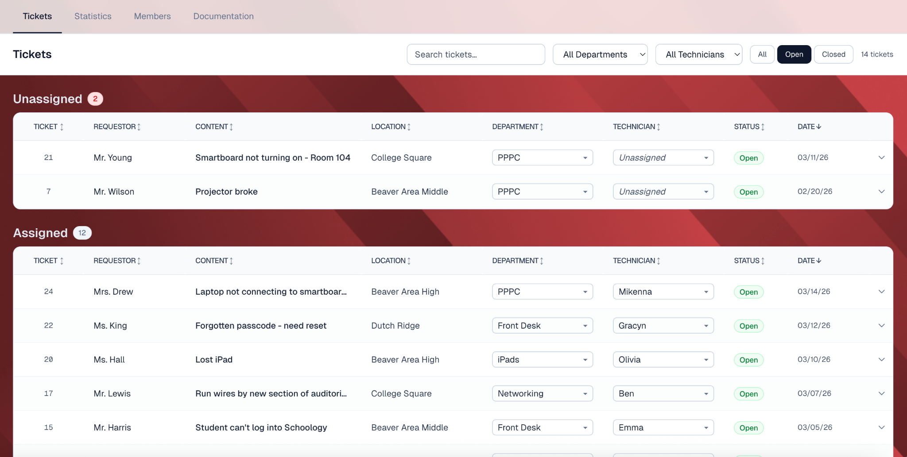
This project aimed to design a system for a messy but working student-run activity group. At first, we were told by the client that a centralized ticketing system was what they wanted. However, after our own research, we realized that the solution to the situation could be as simple as a Google-based documentation system. Students showed great leadership in running the program, so why didn’t we trust them more to organize and routinize the experience in this meaningful project?
At the kickoff meeting, we met our clients, Jim and two first-year students from the Beaver Area School District High School. They enthusiastically introduced the program STAP, which stands for Student Technology Assistive Program, where students get together and solve IT requests for the school district. Jim clarified that he would love to see a centralized and intuitive ticketing platform for high school students as the final deliverable of this project.
At first, we thought this was a very straightforward task. After all, a ticketing system is always…just a ticketing system. It is hardly anything else. However, little did we know that things were going to take a big twist.
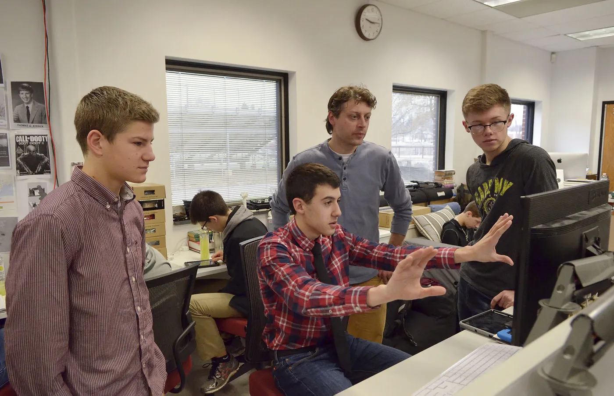
To better adapt to their current structure, we need to know how they are operating right now. For that purpose, we interviewed Jim, the head and one of the only two teachers in this program. He explained the culture, the history and the structure of it. Jim told us that the program used a commercial ticketing software called Zammad previously. However, for some reason, people just stopped using it. Currently, STAP operates mainly on email and verbal communication.
Jim told us that Joe, the other teacher in the program, was the only person still using Zammad. As a result, we turned to Joe for a Zammad demo to see what the problem was. The result was shocking. Zammad is actually a perfectly functioning ticketing system, even with API agent services and a FAQ section. It is an overkill for a high school IT activity club. Could this be the reason that Zammad got abandoned?
This was certainly a curious situation for us. For further investigation, we decided to listen to the other stakeholders’ opinions on the program. We scheduled a campus visit, handed out a survey, and prepared two sets of interview questions for STAP student members and teachers who had used STAP services before.
We have conducted...
A teacher [told us their] projector was broken, [and a STAP technician] fixed it but didn’t tell anyone.
… [the] teacher didn’t use [their] projector for weeks.Participant S.5
During the campus visit, we realized this system was not operating as smoothly as we once thought. As the quote described, not only did the requests often go untracked, but miscommunication happened everywhere. Scattered communication led to unpleasant experiences for members at STAP too. A participant mentioned a horror story of a teacher emailing them through their personal school email instead of the official email STAP used to receive requests. Eventually they had to turn to Jim to stop all of this. And it reduced, but didn’t stop.
To track a task, their current solution was… to communicate verbally. Another participant, who was a department head, mentioned that Jim asked them about a task that they had completely no idea about. Later it turned out that Jim assigned a student member in their department to this task but didn’t tell the head in time. When asked if they have any internal communication tool, the head answered that they did have text chats in the department, but often excluding Jim and other members that were not in this particular department.
Their documentation of work procedures was hardly any better. In 7th and 8th grade, middle school students could join an elective to learn about the technology and communication skills they would need to join STAP. However, the only requirement for them to join STAP was actually to pass an interview in high school. After joining the program, they did have meetings organized by the higher administration group in the organization from time to time, but there were no procedure documents of how to perform certain tasks, such as fixing a projector or resetting a password. The new members had to learn from the older members about their tasks.
Private group chats · Word of mouth · Remind · Email chains
Internal and external communication issues lead to confusion and frustration.
Private group chats · Word of mouth · Email chains · Student-built system · Abandoned 3rd party ticketing systems
High school users need familiar tools and intuitive workflows, not complex systems.
Middle school elective classes · Rigorous interview process
A lack of documentation leads to sustainability failure.
As messy as it seemed, we realized that the problems might have a clean and concise solution. It was not exactly what the client expected, so we needed to demonstrate why that was right.
During the school visit, we met a department head who was in charge of the elementary school. They told us that they simply use a google form and google sheet combo for tracking the tickets. It actually worked, it was just not applied to everybody in STAP yet.
“So why don’t we all just use google…” before the question, we tried to come up with a plan to help the program to foster this “simple solution” instead of throwing a Google Suite on the table.
Request
Ticket Management
Documentation
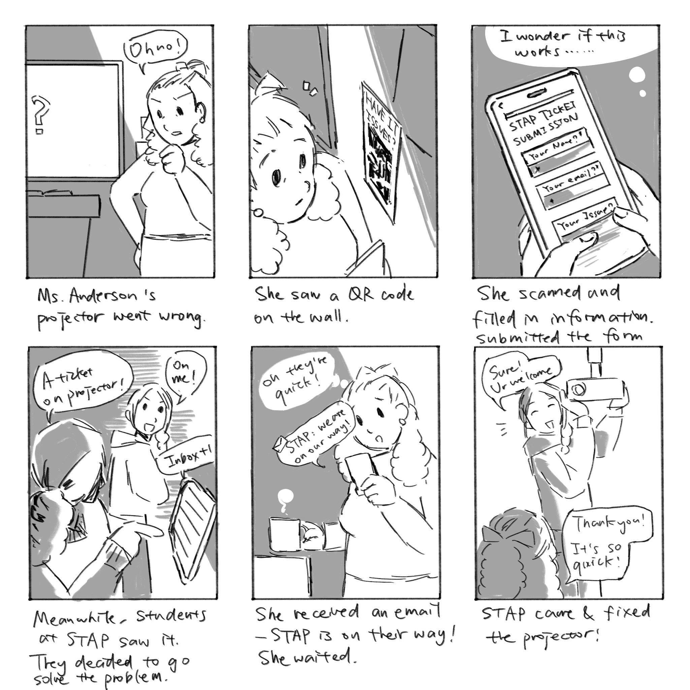
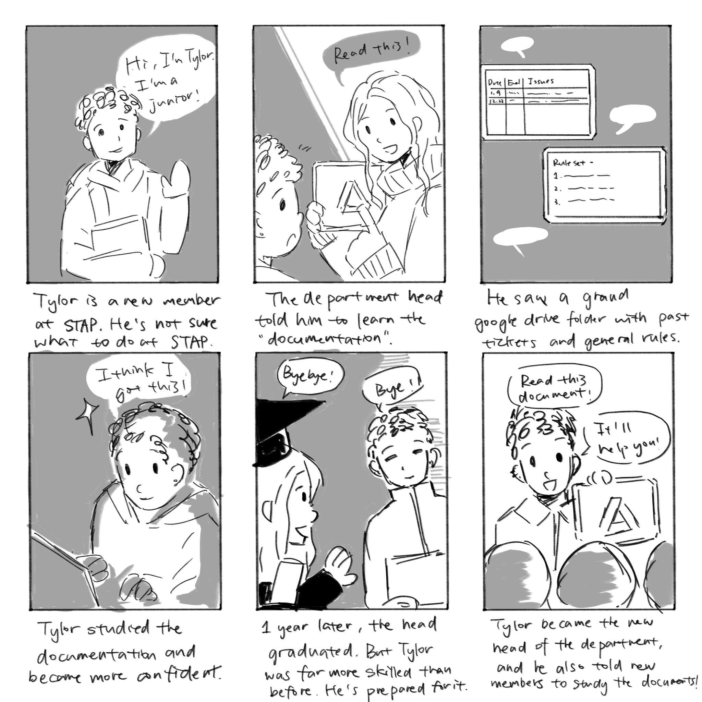
We also assigned our two student clients a task to create a template for the documentation so other members would follow them.
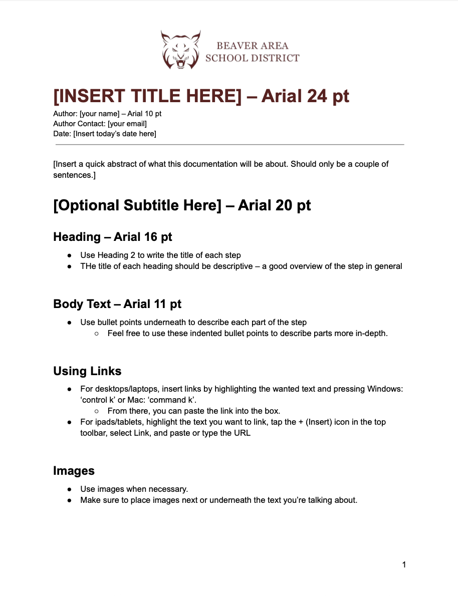
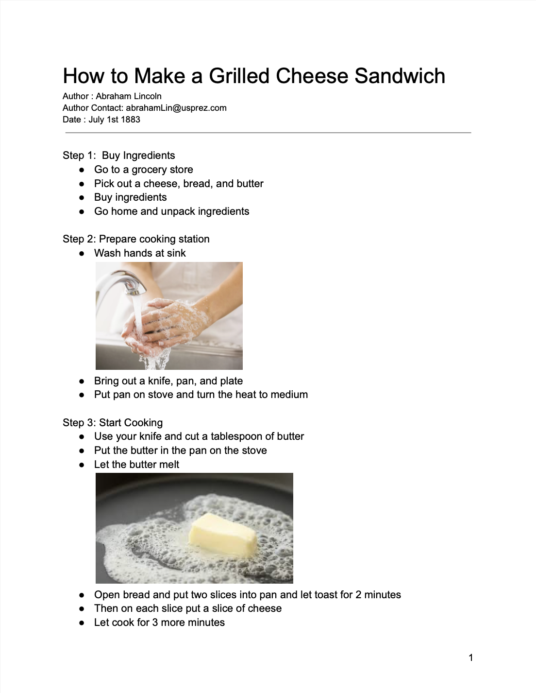
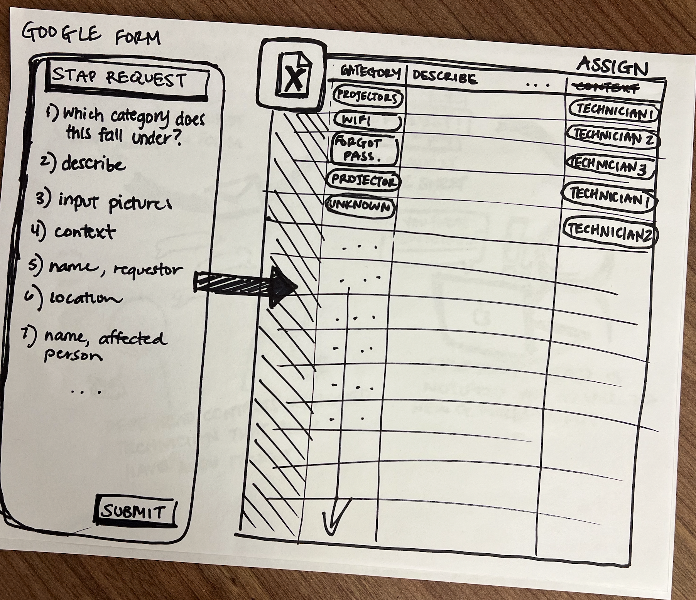
We followed our preliminary plan of developing based on google suite, where the ticket came in from a google form. The requestor’s input would be displayed on the google sheet. Then the STAP members would assign technicians to each of the tickets.
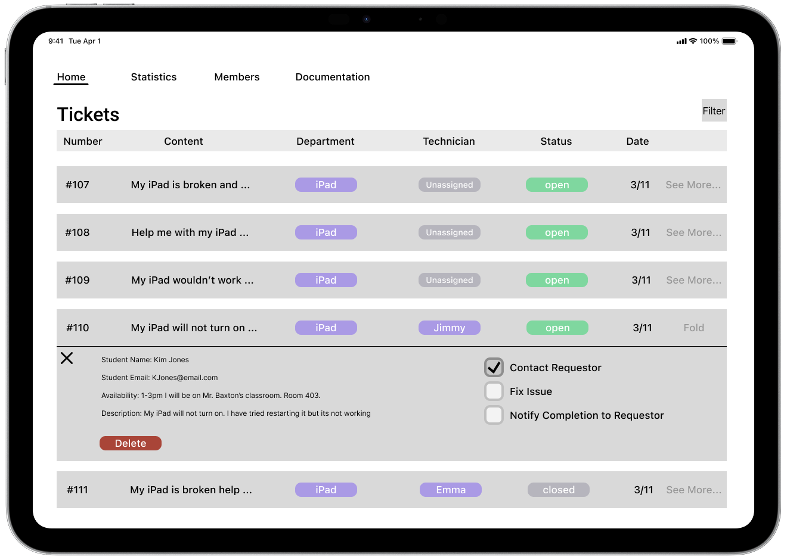
Feeling good about the low-fi, we pushed towards the Mid-fi Prototype. We specified the inputs we would want from the requestors, and aligned them in the ticketing list. We designed with the idea that most students can only access iPad during school time in mind.
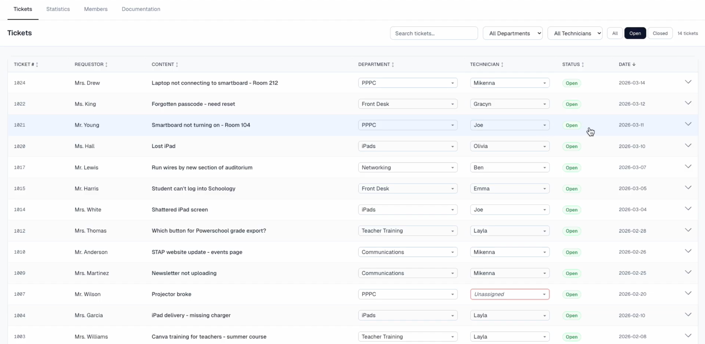
After another round of feedback, we moved into the vibe coding phase. This was a fake front end prototype which performed like a real website. We updated the fidelity of the design, and also added some more possible input information to the list.
At the final round, we received the feedback that the last prototype is not quite adapted to an iPad screen. We readjusted the prototype to better fit the iPad view and also added a signature red color to the background.
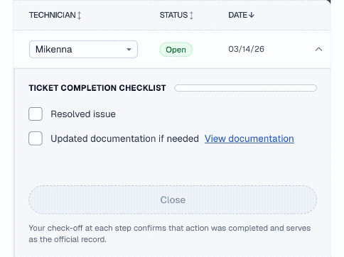
Each submission and status change sends a receipt email automatically, so teachers can see progress in real time without starting another email thread.
An internal owner and deadline stay inside the ticket. Students can coordinate through familiar fields without learning another system or adding extra mental steps.
The completion checklist reminds students to document a solution while it is still fresh. Documentation becomes a quick part of closing the ticket, not a separate project saved for later.
It’s Spring. We made another visit to the school. This time with dozens of flyers, printing with the QR code linked to the request form. We handed over the access of the google folder to STAP members. Based on the basic structure we created, our student clients took the project from us and would continue to maintain and further develop it.
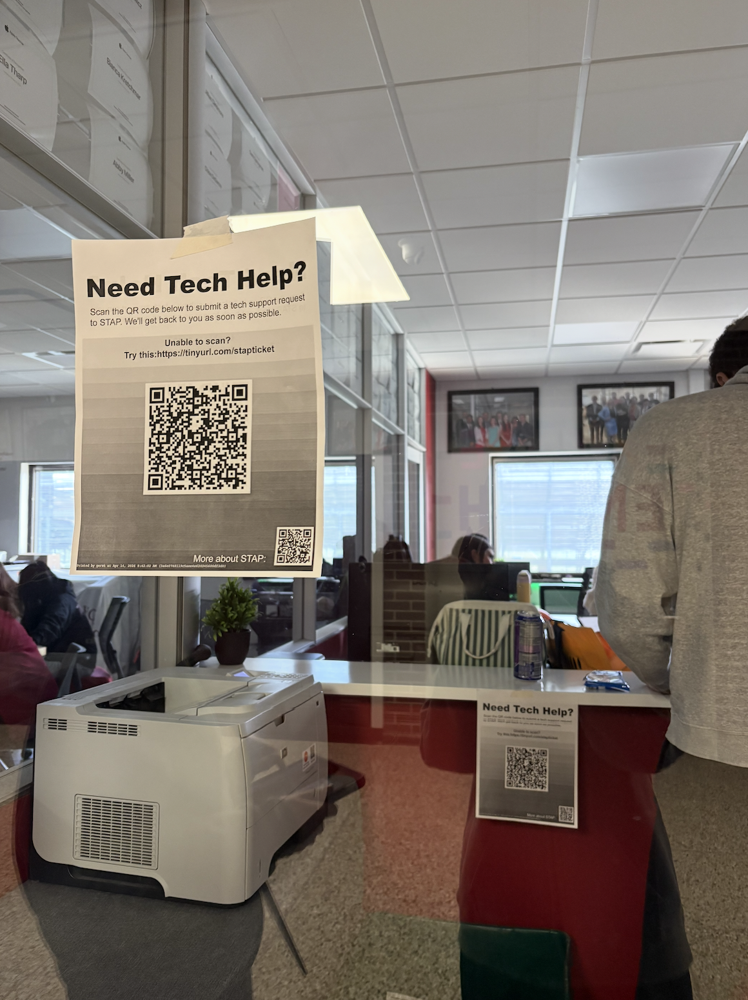
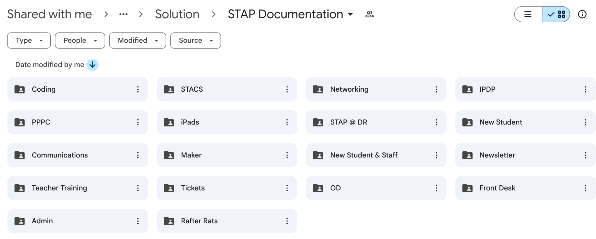
STAP itself is a great opportunity for high school students to develop their technology and organization skills. Eventually, we are very grateful we have the chance to help them build a more structured system.
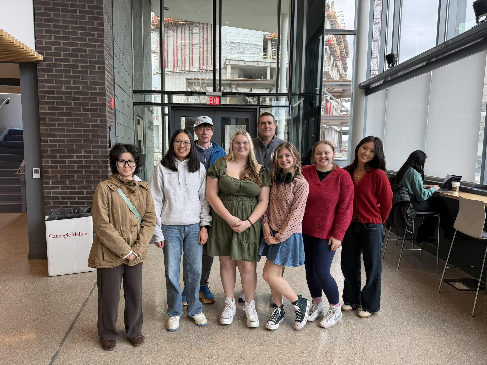